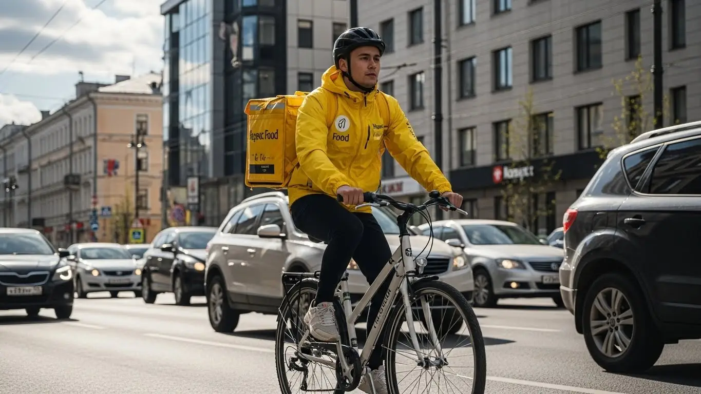

Работа курьером Яндекс Еда в Коломне: доход и условия в 2025-2026

- Работа курьером Яндекс Еды в Коломне: для кого эта вакансия и что вы получите
- Сколько вы будете зарабатывать курьером в Коломне: калькулятор дохода и разбор выплат
- Реальный заработок курьера в Коломне: смены и месячный доход
- График работы и форматы занятости
- Требования к кандидату и документы
- Самозанятость, налоги и юридическая чистота
- Пошаговое оформление и первый выход на линию в Коломне
- Пешком, на вело или на авто: что выгоднее в Коломне
- Районы, маршруты и «топовые» зоны заказов в Коломне
- Безопасность, страховка, штрафы и оплата простоя
- Плюсы и возможные минусы работы курьером в Коломне
- Реальные истории и отзывы курьеров из Коломны
- Ответы на главные вопросы о работе курьером Яндекс Еды в Коломне
- Короткие ответы на главные вопросы
- Итоги и ваш следующий шаг
Все города
Здорово, будущий коллега! Тоже присматриваешься к жёлтой сумке и думаешь, что работа курьером Яндекс Еда в Коломне — это лёгкие деньги на свободном графике? Я тоже так думал, пока не постоял в пробке на Окском проспекте в час пик, не убил подвеску на ямах в Щурово и не понял, что романтика заканчивается с первым ледяным дождём. Давай честно: это не просто «крутить педали», это работа, где без знания города можно больше потерять, чем заработать.
Потому что рекламные обещания «до 5000 в день» не учитывают одного — специфики Коломны. Они не расскажут, что заказ в Старом городе по брусчатке — это одно, а доставка в Колычёво — совсем другое время и расстояние. Чтобы не полагаться на слухи, а увидеть актуальные цифры и условия, загляните на официальную страницу про работу курьером Яндекс Еда в Коломне — там есть детальный калькулятор дохода и форма для быстрой заявки. Никто не предупредит, что твой рейтинг, а значит и доход, напрямую зависит от того, знаешь ли ты, где срезать путь и в какое время лучше не соваться в центр. Большинство новичков сливаются в первый же месяц, потому что тратят на бензин и ремонт больше, чем зарабатывают, просто не понимая этой «внутрянки».
В этом гайде мы не будем лить воду. Мы по шагам разберём, на чём лучше работать в Коломне — на своих двоих, велосипеде или авто, и какие у каждого варианта плюсы и минусы. Посчитаем реальный, а не рекламный, доход за час и за смену с учётом всех расходов. Я покажу на карте самые «хлебные» районы и время, когда заказов больше всего. И главное — расскажу, за что реально штрафуют и как этого избежать, чтобы твоя подработка не превратилась в разочарование.
Меня зовут Алексей. Я сам откатал не одну тысячу километров с термокоробом по Коломне, а сейчас у меня свой небольшой таксопарк-партнёр, так что я вижу всю эту кухню с двух сторон — и как курьер, и как организатор. Никакой рекламы, только голый опыт и цифры. Готов? Тогда погнали, сейчас всё разложу по полочкам, начиная с самого главного — сколько денег на самом деле можно поднять в нашем городе.
Чтобы тебе было проще сориентироваться, я подготовил короткий навигатор по статье.
Что ты точно узнаешь из этого разбора
В этой статье ты ТОЧНО узнаешь:
- Сколько на самом деле можно заработать в Коломне за смену, если работать пешком, на велосипеде или на авто?
- В каких районах Коломны больше всего заказов и в какое время лучше выходить на линию?
- Что выгоднее выбрать в Коломне — доставку пешком, на велосипеде или на своей машине?
- За что курьера могут оштрафовать и как работает бесплатная страховка на смене?
- Обязательно ли быть самозанятым и как платить налоги, чтобы всё было легально?
А если тебе некогда читать всю статью — переходи сразу к заключению, где ты найдёшь короткие ответы на все эти вопросы и указания, в каких разделах искать подробности.
Для начала — наглядная инфографика с ключевыми цифрами по доходам в Коломне.
Работа курьером в Коломне: ключевые цифры
Работа курьером Яндекс Еды в Коломне: для кого эта вакансия и что вы получите
Кому подойдёт эта работа в Коломне
Давай начистоту: эта работа не для всех, но для многих — настоящая находка. В Коломне вакансия курьера в Яндекс Еде идеально подходит студентам, которым нужна подработка после пар. Благодаря свободному графику ты сам решаешь, когда выходить на линию, и можешь легко совмещать доставки с учёбой. Это отличный вариант и для тех, у кого уже есть основная работа, но нужен дополнительный доход — вышел на пару часов вечером или в выходные, и вот у тебя уже деньги на карте.
Огромный плюс — начать можно без опыта. Никто не будет спрашивать про твой трудовой стаж. Главное — хорошо ориентироваться в городе и иметь смартфон. Это хороший старт для тех, кто только начинает свой карьерный путь. Конечно, это отличная подработка и для водителей-курьеров, которые хотят использовать свой автомобиль не только для поездок на дачу, но и для заработка. Если тебе важен гибкий график и быстрые ежедневные выплаты — ты по адресу.

Главные преимущества для жителей районов Колычёво, Голутвин, Щурово
Одно из главных удобств — возможность работать в своём районе. Тебе не придётся каждое утро ехать через весь город на другой конец Коломны. Живёшь, например, в Колычёво — можешь брать заказы оттуда и развозить их по своему же микрорайону. Это экономит и время, и деньги на проезд.
То же самое касается и других крупных жилых массивов. В районе Голутвина, рядом с вокзалом и торговыми центрами, всегда много заказов от Яндекс Еды. Жителям Щурово тоже удобно — там хватает и кафе, и магазинов, так что работа найдётся рядом с домом. Ты просто выходишь из подъезда, включаешь приложение «Яндекс Про» и начинаешь выполнять доставки. Это куда приятнее, чем тратить час-полтора на дорогу до офиса.
Краткое обещание по доходу и условиям
Теперь о главном — о деньгах. В Коломне пеший курьер или велокурьер за смену 4–6 часов может заработать 1500–2500 рублей. Водитель-курьер на своем авто при полной занятости (8–10 часов) выходит на доход 3500–5000 рублей в день. Таким образом, в месяц при полной занятости зарплата может достигать 70 000–90 000 рублей, а если это подработка — то 25 000–40 000 рублей сверху к основному заработку или стипендии.
Ключевые условия работы просты: свободный график, который ты сам составляешь в приложении, и ежедневные выплаты на карту. Отработал смену — получил деньги. Никакого ожидания зарплаты через месяц. Начать можно без опыта, всё необходимое обучение проходит онлайн за пару часов. По сути, ты сам себе начальник и решаешь, когда и сколько работать.

Сколько вы будете зарабатывать курьером в Коломне: калькулятор дохода и разбор выплат
Из чего складывается доход курьера
Твой заработок курьера — это не просто фиксированная ставка. Доход складывается из нескольких частей: во-первых, это базовая оплата за каждый выполненный заказ. Во-вторых, доплата за расстояние — чем дальше везти, тем больше денег ты получишь. Система в Яндекс Про всё считает автоматически, так что расчёты всегда честные.
Кроме этого, есть повышающие коэффициенты. В часы пик (обед, ужин), в плохую погоду или в зонах с высоким спросом стоимость заказов умножается на специальный коэффициент. Это самые выгодные часы для работы. Также существуют персональные бонусы за выполнение определённого числа заказов и чаевые от клиентов — они полностью твои. Важный плюс — Яндекс Еда платит за ожидание, если ты приехал в ресторан, а заказ ещё не готов (оплата простоя), а в некоторых зонах может быть и компенсация проезда на общественном транспорте.
Как пользоваться калькулятором дохода
Чтобы прикинуть свой потенциальный заработок, воспользуйся специальным калькулятором дохода. Пользоваться им просто. Сначала выбери свой город — Коломна. Затем укажи тип доставки: пеший курьер, курьер на велосипеде или на своём авто.
Дальше выставь, сколько часов в день и сколько дней в неделю планируешь работать. Например, 4 часа 5 дней в неделю как подработку или 8 часов 6 дней в неделю для полной занятости. Нажми кнопку «Рассчитать», и система покажет примерный диапазон твоего дохода за день и за месяц. Цифры ориентировочные, но дают вполне реальное представление о том, сколько можно заработать.
Прикинь свой возможный доход в Коломне
Примерный доход в месяц:
Это ориентировочный расчёт. Реальный заработок зависит от спроса, бонусов, чаевых и вашего рейтинга.
Чтобы увидеть актуальные условия и сразу подать заявку, загляни на страницу про работу курьером Яндекс Еда в твоём городе — там есть все детали, калькулятор и форма для анкеты.
Примеры расчёта для пешего, вело- и авто‑курьера в Коломне
Давай на конкретных примерах.
- Пеший курьер в центре. Студент работает в Старом городе, где много кафе и небольшие расстояния. Он выходит на 4 часа в пиковое время вечером. За счёт высокого спроса и коротких дистанций он успевает выполнить 8–10 заказов. Его заработок за смену составит примерно 1600–2000 рублей.
- Курьер на велосипеде между районами. Велокурьер работает в районах Колычёво и Запруды, беря смены по 6 часов. За счёт скорости он покрывает большие расстояния и выполняет заказы как из ресторанов, так и из магазинов. За смену он может сделать 12–15 доставок и заработать 2200–2800 рублей.
- Водитель-курьер на автомобиле по всему городу. Мужчина на своей машине работает полный день, 8–9 часов. Он берёт дальние заказы, например, из центра в Щурово или даже в пригород. Такие доставки дороже, плюс на авто можно брать несколько заказов сразу. Его дневной доход может достигать 4000–5000 рублей, особенно в выходные или в плохую погоду.
Вот так выглядит реальная математика. Как видишь, твой доход напрямую зависит от того, как, где и на чём ты работаешь.
Реальный заработок курьера в Коломне: смены и месячный доход
Перейдём к главному — к деньгам. Никаких рекламных обещаний, только цифры из практики по нашему городу. Зарплата курьера в Яндекс Еде — это не фиксированный оклад, а результат твоих действий: сколько часов ты на линии, на чём передвигаешься и насколько умно подходишь к выбору времени и места. В Коломне, как и везде, можно зарабатывать очень по-разному, и сейчас я разложу по полочкам, от чего это зависит.
Твой доход складывается из нескольких частей: плата за сам заказ, доплата за расстояние, бонусы за выполнение определённого количества доставок и, конечно, чаевые. Но главный множитель твоего заработка — это повышающий коэффициент. Когда в каком-то районе заказов становится больше, чем свободных курьеров, карта в приложении «Яндекс Про» начинает «гореть» фиолетовым. Это сигнал, что за каждый заказ в этой зоне ты получишь больше денег. Твоя задача — научиться ловить эти моменты.

Диапазон дохода для подработки и полной занятости
Если ты ищешь подработку на несколько часов в день, чтобы закрыть кредит или просто иметь карманные деньги, цифры будут одни. Если же готов работать полный день, как на основной работе, — совсем другие. Вот примерные вилки дохода в Коломне, на которые можно ориентироваться.
Подработка (2–4 часа в день, 3–5 дней в неделю):
- Пеший курьер или велокурьер: В среднем выходит 800–1500 рублей за смену. В месяц это может принести 15 000 – 25 000 рублей. Идеально для студентов после пар или как дополнение к основной зарплате.
- Курьер на своем авто: За те же 3–4 часа можно сделать 1200–2000 рублей, так как ты быстрее выполняешь заказы на дальние расстояния. В месяц набегает 20 000 – 35 000 рублей.
Полная занятость (8–10 часов в день, 5–6 дней в неделю):
- Пеший или велокурьер: Дневной заработок здесь уже серьёзнее — 2500–3500 рублей. В месяц активной работы можно выйти на 50 000 – 70 000 рублей.
- Водитель-курьер (на авто): Самый высокий потенциальный доход. За полный рабочий день можно заработать 3500–5500 рублей и больше. Месячный доход при таком графике в Коломне может достигать 70 000 – 100 000 рублей до вычета расходов на бензин.
Как район, время суток и погода влияют на доход
Твой заработок — не случайность, а прямое следствие спроса. Чтобы зарабатывать больше, нужно быть там, где ты нужен людям. В Коломне есть свои закономерности: пиковые часы — это обед (с 12:00 до 14:00) и вечер (с 18:00 до 21:00), когда люди заказывают еду домой после работы. Выходные, особенно вечера пятницы и субботы, — это время стабильно высокого спроса.
Отдельная история — погода. Как только начинается дождь, сильный снег или аномальная жара, количество заказов взлетает. Люди не хотят выходить из дома, а курьерам, которые не испугались таких условий работы, сервис накидывает щедрые коэффициенты. Плюс, в такие моменты клиенты чаще оставляют хорошие чаевые из благодарности. Работать в ливень тяжело, но одна такая смена может принести доход как за два обычных дня.
Советы по увеличению заработка от опытных курьеров
Чтобы не просто работать, а именно зарабатывать, нужно подходить к делу с головой. Вот несколько проверенных советов. Во-первых, всегда планируй свои смены (слоты) на пиковые часы. Не стоит выходить в 10 утра в понедельник и ждать потока заказов. Лучше взять короткий слот вечером и заработать больше за меньшее время.
Во-вторых, изучи карту города в приложении. В Коломне самые «рыбные» места — это центр, особенно район Старого города с его многочисленными кафе, и крупные жилые массивы вроде Колычёво и Голутвина. Много заказов из Яндекс Еды и Яндекс Доставки генерирует ТРЦ «РИО». Если ты на велосипеде, держись центра, где расстояния небольшие. Если на машине — смело бери заказы в отдалённые районы, они оплачиваются лучше. И не бойся мультизаказов (когда везёшь несколько посылок по пути), это отличный способ повысить свой доход в час.
Вот реальный кейс от одного из моих водителей-курьеров. Парень поначалу работал только по вечерам после основной работы, выходило около 1500–2000 рублей за 4 часа. Однажды в субботу пошёл сильный дождь. Он решил рискнуть и вышел на полную смену, сосредоточившись на заказах из ресторанов в центре и доставках в Колычёво. Из-за непогоды коэффициенты были максимальные, плюс люди охотно оставляли чаевые. За 9 часов он сделал почти 6000 рублей «грязными». Это научило его главному правилу: плохая погода — лучшие друзья курьера.
Сравнение дохода в Коломне по форматам занятости
| Тип курьера | Подработка (2-4 часа/день) | Полная занятость (8-10 часов/день) |
|---|---|---|
| Пеший / Вело | 15 000 – 25 000 ₽/мес. | 50 000 – 70 000 ₽/мес. |
| На авто | 20 000 – 35 000 ₽/мес. | 70 000 – 100 000 ₽/мес. |
В итоге, реальный заработок в Коломне полностью в твоих руках. Он зависит от выбранного транспорта, количества часов и умения оказываться в нужное время в нужном месте. Главный совет: не работай хаотично. Анализируй спрос, следи за погодой и выбирай самые выгодные часы и районы для работы, чтобы каждый час на линии приносил максимум денег.
График работы и форматы занятости
Одно из главных преимуществ этой работы — гибкость. Ты сам себе начальник и сам решаешь, когда и сколько работать. Свободный график — это не просто красивые слова, а реальная возможность встроить доставки в свою жизнь, а не наоборот. Можно выходить на пару часов вечером, работать только по выходным или кататься целыми днями. Сервису неважно, какой у тебя график, главное — выполнять взятые на себя заказы.
Такая свобода идеально подходит тем, кто не может или не хочет сидеть в офисе с 9 до 18. Студенты, люди с другой основной работой, молодые родители — все могут найти для себя удобный формат. Главный инструмент планирования — приложение «Яндекс Про», где ты видишь свободные слоты и можешь заранее забронировать удобное время.

Подработка после учёбы или основной работы
Совмещать доставки с чем-то ещё — самый популярный сценарий. Это отличный способ получить дополнительный доход, не меняя кардинально свой образ жизни. Вот пара живых примеров из Коломны.
Пример первый: студент местного ГСГУ. Он живёт в центре, поэтому работает велокурьером. После пар, примерно с 17:00 до 21:00, он выходит на линию. За 4 часа в будний вечер спокойно делает 1000–1300 рублей. В субботу он берёт смену подлиннее, часов на 6–8, и зарабатывает 2500–3000 рублей. В итоге за неделю набегает 8–10 тысяч рублей — отличная прибавка к стипендии.
Пример второй: мужчина, работающий днём на заводе. У него есть своя машина, и он работает как водитель-курьер. Он выходит на линию в пятницу вечером и работает почти всю субботу. Его конёк — крупные заказы из гипермаркетов в рамках Яндекс Доставки и посылки в пригородные посёлки, куда пешком не дойдёшь. За два таких выхода он зарабатывает 6000–9000 рублей, что позволяет ему быстрее гасить ипотеку.
Полная занятость: как выглядит типичный день курьера
Если рассматривать доставки как основную работу, то день строится вокруг пиков спроса. Типичный день курьера на полной занятости в Коломне выглядит примерно так.
Утром, часов в 10, он выходит на линию и выполняет первые заказы — обычно это доставка продуктов или завтраков. С 12:00 до 15:00 начинается обеденный пик: заказы из кафе и ресторанов в центре и деловом районе Голутвин идут один за другим.
После 15:00 наступает затишье. Это время можно использовать для обеда, отдыха или выполнения несрочных доставок из магазинов. А примерно с 17:30 начинается вечерний час пик, который длится до 21:00. Это самое прибыльное время: люди заказывают ужины в спальные районы, например, в Колычёво. Коэффициенты в это время максимальные. К 22:00 поток заказов спадает, и можно завершать смену, взяв последний заказ по пути домой.
Как планировать слоты и выходы через приложение «Яндекс Про»
«Яндекс Про» — твой главный рабочий инструмент. В нём ты не только получаешь заказы, но и планируешь своё время. Есть два типа работы: свободные выходы и плановые слоты. Свободный выход — это когда ты в любой момент можешь нажать кнопку «На линию» и начать работать. Плановые слоты — это заранее забронированные отрезки времени в определённом районе.
Я настоятельно рекомендую новичкам использовать именно плановые слоты. Во-первых, бронируя слот, ты гарантируешь себе работу в это время. Во-вторых, на плановых слотах часто действуют бонусы и гарантии минимального дохода. То есть, даже если заказов будет мало, сервис доплатит тебе до определённой суммы. Но есть важное правило: на плановый слот нельзя опаздывать. Пунктуальность напрямую влияет на твой рейтинг в системе, а высокий рейтинг — это доступ к большему количеству заказов и бонусов.
Был у меня случай с парнем-студентом. Он сначала работал как придётся, выходил на свободных слотах, и заработок скакал. То густо, то пусто. Я посоветовал ему планировать неделю заранее: бронировать вечерние слоты на буднях и один длинный на выходных в своём районе. В итоге его доход стал стабильным, около 7–8 тысяч в неделю, а рейтинг вырос, потому что он перестал пропускать начало смен.
В общем, график работы — это твоя зона ответственности и твоё главное преимущество. Ты можешь сделать его максимально удобным для себя, будь то подработка или полная занятость. Главный совет: используй возможности приложения «Яндекс Про» для планирования. Это поможет сделать доход более предсказуемым и высоким, а также сохранит твой рейтинг на хорошем уровне.
Требования к кандидату и документы
Возраст, гражданство и базовые условия
Давай сразу по делу, без лишних сложностей. Чтобы стать курьером Яндекс Еды в Коломне, тебе должно быть полных 18 лет. Это строгое правило, связанное с материальной ответственностью и законодательством. Никаких исключений для 16-летних, даже с согласия родителей, сервис не делает. По гражданству тоже всё чётко: нужен паспорт РФ или одной из стран ЕАЭС (Беларусь, Казахстан, Армения, Киргизия).
Что касается физической формы, то сверхъестественного ничего не требуется, специальный опыт не нужен. Если ты пеший курьер, будь готов много ходить, в том числе по историческому центру Коломны, где не везде удобно проехать. Для велокурьера важна выносливость, чтобы крутить педали между районами, например, от Колычёво до Голутвина. Водителю-курьеру проще физически, но нужна внимательность на дороге. Главное — отсутствие медицинских противопоказаний к физическим нагрузкам.

Какие документы нужны для работы курьером
Чтобы не затягивать с оформлением, подготовь всё заранее. Список простой, никакой беготни по инстанциям не будет. Тебе понадобится:
- Паспорт. Основной документ для подтверждения личности и возраста. Нужны будут фото или сканы главного разворота и страницы с пропиской.
- ИНН (Идентификационный номер налогоплательщика). Он нужен для регистрации в качестве самозанятого и уплаты налогов. Если не помнишь свой номер, его можно за пару минут узнать на сайте ФНС по паспортным данным.
- Банковская карта. Нужна карта любого российского банка, оформленная на твоё имя. На неё будут приходить ежедневные выплаты. Подойдёт и дебетовая, и кредитная, главное — чтобы у тебя были её полные реквизиты.
- Медицинская книжка. Она требуется не всегда, но для работы с некоторыми ресторанами и магазинами в Коломне может понадобиться. Если она у тебя есть — отлично. Если нет, её можно оформить позже, но лучше иметь в виду, что это может расширить список доступных заказов.
С этим набором ты пройдёшь регистрацию максимально быстро. Все документы загружаются в виде фотографий прямо в приложении Яндекс Про, так что никуда ехать с бумагами не придётся.
Можно ли работать с 16 лет и какие есть альтернативы
Отвечу честно и прямо: в Яндекс Еду курьером с 16 или 17 лет устроиться нельзя. Минимальный возраст — 18 лет. Это связано с полной дееспособностью, материальной ответственностью за заказы и денежные средства, а также с условиями работы, которые не всегда подходят под нормы Трудового кодекса для несовершеннолетних.
Если тебе ещё нет 18, но очень хочется подработать, не стоит отчаиваться. Рассмотри другие варианты, которые доступны подросткам в Коломне. Например, можно поискать подработку промоутером, расклейщиком объявлений или помощником в небольших местных кафе. Это тоже даст опыт и первые карманные деньги, а как только исполнится 18 — сможешь без проблем подать заявку в Яндекс Еду.
Был у меня парень, 19 лет, студент местного вуза. Пришёл устраиваться, а у него из документов только паспорт и студенческий. Я ему объяснил, что нужен ИНН и реквизиты карты. Он прямо при мне зашёл на сайт налоговой, за минуту нашёл свой ИНН, скачал приложение банка и получил виртуальную карту с реквизитами. Вся подготовка заняла 15 минут. На следующий день он уже вышел на свою первую смену в районе Старого города и заработал первые деньги.
В общем, требования к кандидатам и условия работы простые и понятные. Главное — быть совершеннолетним, иметь гражданство РФ или ЕАЭС и подготовить базовый пакет документов. Это убирает 90% всех задержек при оформлении. Мой совет: перед заполнением анкеты проверь, что у тебя всё под рукой, особенно ИНН — это сэкономит тебе время и нервы.
Самозанятость, налоги и юридическая чистота
Почему курьеры Яндекс Еды работают как самозанятые
Многих новичков пугает слово «самозанятость», но на деле это самый простой и выгодный формат работы с сервисом. По сути, ты становишься сам себе начальником и работаешь с Яндексом как с партнёром-заказчиком. Это не трудовой договор, а договор об оказании услуг. Такой формат даёт тебе полный контроль и свободный график — ты сам решаешь, когда и сколько работать.
Главные плюсы самозанятости для курьера: это полностью официально. Твой доход легален, ты можешь взять справку о доходах для банка, если понадобится кредит. При этом нет никакой сложной бухгалтерии, отчётов и деклараций. Всё происходит автоматически через приложение «Мой налог». Это защищает и тебя, и сервис, делая сотрудничество прозрачным и честным. Работать «в серую» за наличку — это прошлый век и лишние риски.
Как за 10 минут оформить самозанятость через «Мой налог»
Оформление статуса самозанятого занимает меньше времени, чем заварить кофе. Никаких поездок в налоговую, всё делается онлайн с телефона. Вот простая пошаговая схема:
- Скачай приложение «Мой налог» из Google Play или App Store. Это официальное приложение от ФНС России.
- Выбери способ регистрации. Самый быстрый — по паспорту.
- Отсканируй паспорт. Просто наведи камеру телефона на главный разворот паспорта, приложение само распознает все данные.
- Сделай селфи. Приложение попросит тебя сфотографироваться, чтобы подтвердить личность. Это как в банковских приложениях.
- Подтверди регистрацию. Проверь данные и нажми кнопку. Через несколько минут тебе придёт уведомление, что ты зарегистрирован как плательщик налога на профессиональный доход (НПД).
Вот и всё. Весь процесс реально занимает 5–10 минут. После этого ты сможешь привязать свой статус самозанятого к приложению Яндекс Про, и система будет всё делать за тебя.
Сколько и как платить налоги
Здесь тоже всё максимально просто и прозрачно. Ставка налога для самозанятого курьера, работающего с юридическим лицом (Яндекс Еда), составляет 6% от дохода. Никаких других скрытых платежей или взносов нет. Если ты получил за день 2000 рублей, налог составит всего 120 рублей.
Самое удобное — тебе не нужно ничего считать самому. Приложение Яндекс Про автоматически передаёт данные о твоём доходе в «Мой налог». В конце месяца приложение «Мой налог» само сформирует квитанцию на общую сумму налога. Тебе останется только нажать кнопку «Оплатить» до 28 числа следующего месяца. Это гораздо проще и безопаснее, чем работать неофициально, постоянно переживая о проверках или рискуя не получить честно заработанные деньги.
Один из моих водителей долго работал неофициально в другой службе, получал деньги на карту от физлиц. Когда решил взять машину в кредит, ни один банк не дал ему одобрения — официального дохода-то нет. Я ему помог оформить самозанятость для работы с Яндексом. Через три месяца он взял выписку о доходах прямо из приложения «Мой налог», подал заявку и без проблем получил кредит. Теперь он понимает, что работать «в белую» — это не только правильно, но и выгодно в долгосрочной перспективе.
Итог по этому блоку простой: не бойся самозанятости. Это современный, легальный и очень удобный инструмент. Он даёт тебе официальный доход, но сохраняет свободный график. Мой совет: регистрируйся сразу, как только решил начать работать. Это обязательное условие, и чем быстрее ты это сделаешь, тем быстрее выйдешь на линию и начнёшь получать ежедневные выплаты.
Пошаговое оформление и первый выход на линию в Коломне
Многие думают, что устроиться курьером — это долго и муторно, с кучей бумажек и собеседований. На деле всё гораздо проще, ведь это отличный вариант подработки или основного заработка со свободным графиком, доступный даже без опыта. Если не тянуть, то от заполнения анкеты до первого заработка может пройти меньше суток. Главное — чётко следовать шагам, и никаких проблем не возникнет.
Шаг 1–2: анкета и онлайн‑обучение
Первым делом ты заходишь на сайт и заполняешь простую анкету. Там нет ничего сложного: ФИО, дата рождения, номер телефона, гражданство. Это основные требования, и никто не будет спрашивать про твой предыдущий опыт работы или требовать резюме. Весь процесс занимает от силы 10–15 минут. После отправки анкеты твои данные уходят на быструю проверку, которая обычно занимает от нескольких минут до пары часов.
Как только проверка пройдена, тебе на телефон приходит ссылка на короткое онлайн‑обучение. Это не нудные лекции, а несколько коротких видео или слайдов. Тебе покажут, как пользоваться приложением «Яндекс Про», какие есть стандарты общения с клиентами и ресторанами в Яндекс Еде, и напомнят о правилах безопасности на дороге. В конце будет небольшой тест из нескольких вопросов, чтобы убедиться, что ты всё понял. Прошёл тест — считай, полдела сделано.
Шаг 3: получение сумки и доступа к заказам в Коломне
Следующий этап — получение экипировки, в первую очередь фирменной термосумки (её ещё называют термокороб). Без неё работать в доставке Яндекс Еды нельзя, так как важно сохранять температуру заказов. В Коломне сумку обычно получают в офисе одного из партнёров сервиса. Не нужно никуда звонить и искать адреса — после обучения в приложении «Яндекс Про» появится карта с точками, где можно забрать всё необходимое.
Приезжаешь по указанному адресу, показываешь в приложении, что ты — это ты, и тебе выдают сумку и, возможно, другую экипировку вроде дождевика или жилетки. Как только ты отметил в приложении, что термокороб у тебя на руках, и твои документы окончательно подтверждены, система открывает тебе доступ к заказам. На этом этапе также нужно будет выбрать формат сотрудничества — как правило, это оформление самозанятости, что делается онлайн за 10 минут. С этого момента ты полноценный курьер и можешь выходить на линию.
Шаг 4: первый слот и первый доход
Теперь самое интересное — первый выход на работу. В приложении «Яндекс Про» ты увидишь карту Коломны с доступными для работы зонами и слотами (заранее запланированные смены). Мой совет: для первого раза выбери короткий слот, часа на 2–4, и в том районе, который ты хорошо знаешь. Живёшь в Колычёво — начинай там. Знаешь каждый двор в Голутвине — твой выбор очевиден. Так ты будешь чувствовать себя увереннее и не потратишь время на плутания с навигатором.
Выбираешь слот, подтверждаешь его и в назначенное время выходишь на линию. Приложение сразу начнёт предлагать тебе заказы поблизости. Берёшь первый, второй, третий... и вот ты уже видишь, как на твой баланс в приложении поступают первые деньги. Это очень мотивирует, ведь в Яндексе действуют ежедневные выплаты. Многие ребята выполняют свой первый заказ уже в день регистрации или на следующее утро.
Расскажу про одного нашего парня, Сергея. Он студент, живёт в Щурово. Заполнил анкету утром, пока ехал в автобусе. Днём, между парами, посмотрел обучение и прошёл тест. Вечером заехал к партнёру в центре, забрал сумку. И сразу же взял вечерний слот на 3 часа в своём районе. За эти три часа спокойно сделал 5 заказов из местных кафе и заработал около 900 рублей. Его отзыв: не ожидал, что всё будет так быстро и просто.
В общем, процесс отлажен до мелочей. Заполнил анкету, посмотрел короткое видео, забрал термокороб — и вперёд, зарабатывать. Главное, на первом слоте не нервничать и начинать с хорошо знакомого района, чтобы втянуться в ритм.
Пешком, на вело или на авто: что выгоднее в Коломне
Выбор транспорта — одно из ключевых решений, которое напрямую влияет на твой доход и комфорт работы. В Коломне у каждого формата — пешком, на велосипеде или на машине — есть свои сильные стороны. Что подойдёт именно тебе, зависит от твоей физической подготовки, наличия транспорта и того, в каких районах города ты планируешь работать. Нет универсально «лучшего» варианта, есть тот, который выгоднее под твои условия.
Пеший курьер: для центра и плотной застройки в Коломне
Если у тебя нет машины или велосипеда, или ты просто хочешь совместить подработку с прогулками, пеший формат — отличный старт. В Коломне он особенно эффективен в историческом центре — в районе Кремля и Посада. Здесь узкие улочки, много пешеходных зон, а летом ещё и толпы туристов. На машине тут не развернёшься, а пеший курьер может срезать путь через дворы и скверы, доставляя заказы быстро и без проблем с парковкой.
Также пешая доставка хорошо себя показывает в районах с плотной многоэтажной застройкой, например, в центральной части города вдоль улицы Октябрьской Революции. Здесь много кафе, магазинов и жилых домов находятся в радиусе 1–2 километров друг от друга. Заказы короткие, их много, и ты не тратишь время на дорогу. Да, много не унесёшь, но для подработки на несколько часов в день — идеальный вариант с нулевыми затратами.
Велокурьер: быстрые доставки между спальными районами
Велосипед — это золотая середина. Он даёт скорость и манёвренность, которых нет у пешего курьера, и избавляет от пробок и расходов на бензин, в отличие от автомобиля. Для Коломны, где велокурьер должен оперативно перемещаться между крупными спальными районами, это настоящая находка. Например, маршруты между Колычёво и Голутвином или доставка из центра в район Старой Коломны на велосипеде преодолеваются гораздо быстрее, чем на общественном транспорте или авто в час пик.
Кроме того, работа велокурьером — это, по сути, оплачиваемый фитнес. Ты постоянно в движении, поддерживаешь себя в форме и при этом зарабатываешь. Велосипед позволяет брать больше заказов на средние дистанции (2–5 км), которые оплачиваются лучше, чем короткие пешие. Это оптимальный выбор для тех, кто хочет работать по 6–8 часов в день и получать стабильный заработок.
Водитель‑курьер: заказы по всему городу и пригороду Озёры, Луховицы
Работа курьером на своем авто открывает доступ к самым денежным заказам. Во-первых, это дальние доставки по всему городу, например, из одного конца Коломны в другой, скажем, из Щурово в Колычёво. Такие заказы хорошо оплачиваются за счёт километража. Во-вторых, это работа с крупными заказами из супермаркетов или несколькими заказами одновременно, которые пешком или на велосипеде просто не увезти.
Особенно выгодно работать на авто в плохую погоду — дождь, снег, мороз. В это время количество пеших и велокурьеров на линии резко сокращается, а спрос на доставку, наоборот, взлетает. Коэффициенты растут, и за несколько часов можно заработать как за целый день в хорошую погоду. Кроме того, только на машине можно комфортно обслуживать заказы в пригород Коломны — Озёры, Луховицы и ближайшие посёлки, где всегда есть спрос и мало конкуренции.

Был у меня водитель-курьер, Андрей, работал на своей старенькой «четырке». Поначалу катался только по городу, брал слоты в пиковые вечерние часы. Заметил, что часто прилетают заказы в сторону Озёр, но с небольшой доплатой. Он решил рискнуть и стал брать слоты с зоной покрытия «Город + пригород». Оказалось, что хоть заказов туда и меньше, но каждый из них по стоимости как 2-3 городских. Плюс на обратном пути часто падали заказы уже в Коломну. В итоге его средний дневной заработок вырос почти на 30%.
Сравнение форматов доставки в Коломне
| Параметр | Пеший курьер | Велокурьер | Водитель-курьер |
|---|---|---|---|
| Лучшие зоны в Коломне | Исторический центр, район Кремля, ул. Октябрьской Революции | Спальные районы: Колычёво, Голутвин, Старая Коломна | Весь город, включая отдалённые районы (Щурово) и пригород (Озёры, Луховицы) |
| Тип заказов | Короткие, из ближайших кафе и ресторанов | Средние дистанции, доставка из ТЦ в жилые кварталы | Дальние, крупные из супермаркетов, работа в непогоду |
| Потенциальный доход | Базовый, идеален для подработки | Средний, подходит для полной занятости | Высокий, максимальный заработок |
| Расходы | Минимальные (удобная обувь, одежда) | Небольшие (обслуживание велосипеда) | Высокие (бензин, амортизация, страховка) |
В итоге, выбор за тобой. Если нужна простая подработка на пару часов в центре — начинай пешком. Если готов работать активно и хочешь хороший средний доход — велосипед твой лучший друг. А если нацелен на максимальный заработок и у тебя есть машина — работа на авто твой выбор, особенно в пиковые часы и на дальние расстояния.
Районы, маршруты и «топовые» зоны заказов в Коломне
Чтобы работа курьером приносила хороший доход, а не только усталость, нужно понимать карту своего города не как турист, а как стратег. В Коломне, как и везде, есть свои «рыбные места», где заказы сыплются один за другим, и тихие зоны, где можно прождать час впустую.
Главное — не просто кататься по городу, а делать это с умом, выбирая правильные районы в правильное время. Знание локальной специфики — твой главный козырь. Поняв, где и когда концентрируется спрос, ты сможешь зарабатывать значительно больше, сократив пустые пробеги и простои. Давай разберёмся, где в Коломне деньги лежат прямо на асфальте.
Где больше всего заказов: ТРЦ, бизнес‑центры и туристические места
Самые горячие точки на карте — это места, где люди тратят деньги: едят, отдыхают и делают покупки. В Коломне это, в первую очередь, крупные торговые центры. Стабильный поток доставок идёт из ТРЦ «РИО» на Октябрьской Революции и ТЦ «Кадо» на площади Восстания. Там расположены фуд-корты с популярными сетями вроде «Вкусно — и точка» и KFC, откуда поступает много заказов через Яндекс Еду, а также множество магазинов, которые тоже пользуются доставкой. В обеденное время (с 12:00 до 15:00) и по вечерам здесь всегда повышенный спрос и, как следствие, «фиолетовые зоны» с высокими коэффициентами в приложении.
Второй центр притяжения — историческая часть города, особенно район Коломенского кремля. Летом и в выходные здесь полно туристов, а местные жители любят гулять и заказывать еду из многочисленных кафе и ресторанов. Заказы здесь могут быть не такие частые, как в ТРЦ, но часто более дорогие и с хорошими чаевыми. Работать здесь как пеший курьер или велокурьер — одно удовольствие, так как на машине в узких улочках бывает тесновато.
Работа в своём районе: примеры для популярных жилых кварталов
Многие новички думают, что весь доход крутится только в центре, и каждый день тратят время и деньги на дорогу. Это ошибка. Крупные спальные районы — это настоящая золотая жила, особенно для тех, кто там живёт. Возьмём, к примеру, Колычёво или район Голутвина. Здесь живут тысячи семей, которые по вечерам и в выходные активно заказывают пиццу, суши и продукты из ближайших магазинов.
Работая в своём районе, ты получаешь несколько преимуществ. Во-первых, ты знаешь каждую тропинку, каждый двор и подъезд, что сильно экономит время. Во-вторых, доставки здесь часто идут сериями из одного и того же ресторана или магазина по соседним адресам. Это позволяет выполнять их быстрее и с минимальным пробегом. Так что не стоит недооценивать потенциал своего микрорайона — часто стабильный заработок или удобная подработка находятся буквально под окнами.
Как выбирать зоны и слоты в «Яндекс Про», чтобы не мотаться впустую
Приложение «Яндекс Про» — твой главный инструмент планирования. Ключевой элемент — это карта спроса. Зоны, подсвеченные разными оттенками лилового и фиолетового, показывают, где сейчас больше всего работы и действуют повышающие коэффициенты. Перед началом смены или выходом на свободный слот всегда открывай карту и смотри, где «горит». Нет смысла ехать в «бледную» зону, даже если она тебе удобна.
Планируй свои слоты заранее. Запланированные слоты часто идут с бонусами и гарантированным минимальным доходом в час, даже если заказов будет мало. Это твоя страховка от простоя. И главный совет: не гоняйся за одной «жирной» доставкой через весь город. Часто выгоднее оставаться в стабильно активной зоне и выполнить 3–4 заказа на короткие расстояния, чем потратить час на одну дальнюю поездку, а потом возвращаться пустым. Думай об эффективности каждого километра.
Вот недавний пример из практики. Один курьер на своем авто, старенькой «Нексии», в первый месяц работы пытался брать все заказы подряд. Мотался из Щурово в Старый город, потом в Колычёво. В итоге за 8-часовую смену проезжал по 150 км, сжигал много бензина, а его чистый доход был невысоким. По моему совету он сменил тактику: стал брать утренние и дневные слоты в районе Голутвина и ТЦ «Кадо», а вечерние — строго в своём спальном районе. Пробег сократился вдвое, а чистый заработок за смену вырос почти на 30%, потому что он перестал возить воздух.
Сравнение зон для работы в Коломне
| Параметр | Центр и ТРЦ («РИО», «Кадо») | Спальные районы (Колычёво, Голутвин) |
|---|---|---|
| Пик заказов | Обед (12:00–15:00), вечер (18:00–21:00), выходные | Вечер (19:00–22:00), выходные (весь день) |
| Тип заказов | Фастфуд, рестораны, магазины электроники | Пицца, суши, продукты из супермаркетов |
| Плотность заказов | Очень высокая в пиковые часы | Стабильно высокая по вечерам |
| Сложность | Пробки, проблемы с парковкой | Проще с парковкой, но нужно знать дворы |
В итоге, ключ к хорошему заработку в Коломне — это грамотное планирование и знание города. Анализируй карту спроса в «Яндекс Про», сочетай работу в центре в пиковые часы с доставками в своём районе по вечерам. Мой совет: не распыляйся. Выбери 2-3 перспективные зоны и стань в них лучшим — это принесёт больше денег, чем хаотичные поездки по всему городу.
Безопасность, страховка, штрафы и оплата простоя
Работа курьера — это не только про скорость и заработок, но и про ответственность. Ты работаешь на дороге, общаешься с людьми, отвечаешь за чужие заказы. Поэтому важно говорить не только о деньгах, но и о том, как защитить себя, свой доход и свой рейтинг. Яндекс со своей стороны даёт для этого инструменты — от бесплатного страхования до оплаты вынужденного ожидания. Но и от тебя требуется соблюдение простых, но важных правил.
Давай честно разберём, какие риски существуют, как работает система защиты и за что можно получить штраф. Понимание этих моментов с самого начала убережёт тебя от неприятных сюрпризов и поможет чувствовать себя увереннее на линии.
Бесплатная страховка на сменах и что она покрывает
Это один из самых важных моментов, о котором многие новички даже не знают. Когда ты находишься на активном заказе — с момента его принятия и до момента вручения клиенту — твоя жизнь и здоровье застрахованы. Это бесплатное страхование для курьера, все расходы берёт на себя сервис. Сумма покрытия доходит до 2 миллионов рублей.
Что это значит на практике? Если, не дай бог, ты попал в ДТП на машине, упал с велосипеда и получил травму или поскользнулся зимой и сломал ногу во время доставки — страховка покроет расходы на лечение. Это серьёзная поддержка, которая показывает, что ты не остаёшься один на один с проблемой. Главное в такой ситуации — сразу же сообщить о случившемся в службу поддержки через «Яндекс Про» и следовать их инструкциям.
Правила безопасности на дороге и при доставке
Звучит банально, но большинство проблем возникает из-за спешки и невнимательности. Вот базовые правила, которые нужно вбить себе в голову. Для пешего курьера: всегда смотри по сторонам, даже на пешеходном переходе, и носи светоотражающие элементы в тёмное время суток. Для велокурьера: шлем — твой лучший друг, а фонари и катафоты — обязательны ночью. Не гоняй по тротуарам, уважай пешеходов.
Для водителей-курьеров главное — не нарушать ПДД в погоне за скоростью. Лучше приехать на 5 минут позже, чем попасть в аварию. Не паркуйся как попало, чтобы не перекрывать выезды. В плохую погоду — дождь, гололёд — снижай скорость вдвое. И общее для всех: аккуратно обращайся с заказом. Пиццу неси горизонтально, супы не тряси. Если работаешь с наличкой, держи деньги в надёжном месте и будь внимателен при расчётах.
Какие бывают штрафы и как их избежать
Система не стремится тебя оштрафовать, но требует соблюдения стандартов качества, которые являются частью условий работы. Штрафы или снижение рейтинга (что тоже бьёт по доходу) можно получить за конкретные нарушения. Чаще всего это грубость в адрес клиента или сотрудника ресторана, порча заказа (пролил кофе, помял коробку), серьёзные и регулярные опоздания без уважительной причины. Также наказывают за отмену уже принятого заказа или за то, что ты не вышел на запланированный слот.
Как этого избежать? Элементарной вежливостью и ответственностью. Если ресторан задерживает заказ — не ругайся, а напиши в поддержку. Если понимаешь, что опаздываешь из-за пробки — предупреди клиента через чат. Если случайно повредил упаковку — честно сообщи в поддержку, они помогут решить проблему. 99% всех конфликтных ситуаций можно избежать, если просто быть адекватным и вовремя общаться со службой поддержки.
Что такое оплата простоя и как она защищает ваш доход
Это одна из ключевых фишек, которая выгодно отличает Яндекс Доставку от многих других сервисов. Оплата простоя — это твоя финансовая защита от обстоятельств, на которые ты не можешь повлиять. Например, ты приехал в ресторан, а заказ ещё не готов. Или прибыл к клиенту, а он не открывает дверь и не отвечает на звонки. В таких ситуациях в приложении запускается таймер ожидания.
Как только бесплатное время ожидания (обычно около 10 минут) истекает, сервис начинает платить тебе за каждую последующую минуту простоя. Это справедливо, ведь твоё время — это твои деньги. Благодаря этой функции ты не теряешь в доходе, даже если ресторан оказался нерасторопным или клиент — необязательным. Это важная гарантия, которая делает работу более предсказуемой и стабильной.
Был у меня случай. Курьер-новичок приехал за большим заказом в кафе в центре Коломны в субботу вечером. На кухне была полная запара, его заказ обещали отдать через 20-25 минут. Парень уже начал нервничать, что теряет время и деньги. Я ему посоветовал сразу написать в чат поддержки, что ресторан задерживает выдачу. Он так и сделал. В итоге, пока он ждал, у него включилось платное ожидание. Заказ он получил с опозданием, но за 15 минут простоя ему начислили компенсацию, которая покрыла потерянное время.
Итак, безопасность и правила — это не пустые слова. Страховка защищает твоё здоровье, оплата простоя — твой кошелёк, а соблюдение простых норм поведения — твой рейтинг и доступ к заказам. Мой совет: всегда будь на связи с поддержкой. Если что-то пошло не так, не пытайся решить проблему в одиночку — напиши в чат. Это самый быстрый и правильный способ избежать штрафов и недоразумений.
Плюсы и возможные минусы работы курьером в Коломне
Любая работа, если по-честному, это не только деньги, но и свои особенности. Где-то ты сидишь в офисе с 9 до 6, а где-то — сам себе хозяин. Курьерская доставка как раз из второй категории. Здесь есть очевидные плюсы, которые многих и привлекают, но есть и моменты, к которым нужно быть готовым. Моя задача — рассказать тебе всё как есть, без прикрас, чтобы ты понимал, во что ввязываешься.
Сильные стороны работы курьером в Коломне
Главный козырь этой работы — свободный график. Ты сам решаешь, когда выходить на линию и на сколько. Захотел поработать пару часов после основной работы или учёбы — пожалуйста. Нужны деньги срочно — вышел на полный день и к вечеру уже получил заработок на карту. Сервис предлагает ежедневные выплаты, так что никаких «зарплата десятого и двадцать пятого». Это очень дисциплинирует и даёт чувство контроля над своими финансами.
Второй важный момент — работаешь там, где тебе удобно. Живёшь в Колычёво — можешь брать заказы в своём районе, не тратя время и деньги на дорогу до центра. То же самое касается Голутвина или Щурово. Приложение «Яндекс Про» позволяет выбирать удобные зоны. Плюс, ты не один на один с проблемами: есть круглосуточная поддержка, которая поможет в сложной ситуации, и бесплатная страховка жизни и здоровья на время смены. Это не пустые слова, это реальная защита.
И, наконец, всё официально. Ты работаешь как самозанятый, платишь небольшой налог (6% с поступлений от юрлиц), и всё это делается в пару кликов через приложение. Никакой сложной бухгалтерии, серых схем и конвертов. У тебя официальный доход, который ты можешь подтвердить, если понадобится. Для многих моих ребят это стало решающим фактором — работать вбелую и спать спокойно.
С какими сложностями чаще всего сталкиваются курьеры
Будем откровенны, работа на ногах. Если ты пеший или велокурьер, будь готов к физической нагрузке. Особенно поначалу ноги будут гудеть, но со временем привыкаешь. Главный вызов — это погода. В Коломне, как и везде, бывают и дожди, и снегопады, и жара под тридцать. Заказ нужно доставить в любом случае.
Мой совет: не экономь на экипировке. Хорошая непромокаемая куртка, удобная обувь и термобельё зимой — это не роскошь, а рабочий инструмент, который сбережёт здоровье и нервы. Зато в плохую погоду всегда действуют повышенные коэффициенты, и чаевых оставляют больше — люди ценят твой труд.
Бывают моменты простоя, когда заказов мало. Сидеть и ждать — не лучший вариант. Во-первых, сервис частично компенсирует это время по минимальной ставке, если ты на плановом слоте. Во-вторых, учись анализировать спрос. Заказов всегда больше в обеденное время (с 12 до 15) и вечером (с 18 до 22), а также в выходные и праздники. Старайся выходить именно в эти пиковые часы.
И, конечно, клиенты. 99% людей — адекватные и вежливые, но иногда попадаются и сложные персонажи. Главное правило — сохранять спокойствие, быть вежливым и не вступать в конфликт. Если ситуация выходит из-под контроля, сразу пиши в поддержку — они помогут разрулить.
Кому такая работа подходит, а кому лучше поискать другой формат
Эта работа идеально подходит для тех, кто не может или не хочет сидеть на одном месте. Это отличная подработка для студента, которому нужно совмещать смены с парами в ГСГУ, или если у тебя есть основная работа со сменным графиком. Большой плюс в том, что можно начать без опыта. Она для самостоятельных и ответственных людей, которых не нужно подгонять. Если ты любишь движение, хорошо ориентируешься в городе и ценишь возможность самому влиять на свой доход — здесь ты будешь в своей тарелке.
С другой стороны, если ты ищешь стабильный оклад, который не зависит от твоей активности, и предсказуемый график с восьми до пяти в тёплом помещении, то работа курьером, скорее всего, не для тебя. Она не подойдёт тем, кто тяжело переносит физические нагрузки или не готов работать на улице в разную погоду. И если ты не любишь общаться с людьми или каждая нестандартная ситуация выбивает тебя из колеи, лучше поискать что-то более спокойное. Тут нужно быть немного предпринимателем и психологом в одном лице.
Как-то раз ко мне пришёл парень, назовём его Макс, студент. Начал работать на велосипеде летом, всё шло отлично. Но с первым снегом он скис — холодно, скользко, заказов меньше. Я ему посоветовал не бросать, а сменить тактику: брать короткие 2-3 часовые слоты в самом центре, в районе ТРЦ «РИО», где всегда есть спрос, и выходить именно в «нелётную» погоду. Он попробовал и удивился: за счёт повышенных коэффициентов за 3 часа в снегопад он зарабатывал почти столько же, сколько за 5 часов в ясный день.
В общем, работа курьером — это свобода и прямой заработок, но взамен она требует выносливости, самодисциплины и умения подстраиваться под обстоятельства. Взвесь все «за» и «против» применительно к себе. Главное — подходить к делу с умом, а не просто бездумно кататься по городу.
Реальные истории и отзывы курьеров из Коломны
История студента Государственного социально-гуманитарного университета, который совмещает учёбу и доставку
Павел, 20 лет, велокурьер:
«Я учусь в ГСГУ на истфаке, живу в Колычёво. Стипендия, сами понимаете, небольшая, а у родителей постоянно просить не хочется. Пошёл в Яндекс Еду, потому что график можно подстроить под себя. Обычно выхожу на 3-4 часа по вечерам в будни, после пар, и беру один длинный слот часов на 6-8 в субботу. Катаюсь в основном по своему району и в Голутвине, тут всё знаю как свои пять пальцев.
День строю просто: до обеда учёба, потом пара часов на отдых и домашку, а с 18:00 до 22:00 — на линию. Даже в перерывах между заказами успеваю почитать что-то к семинару. В среднем за неделю выходит 7-9 тысяч рублей. Мне на жизнь, развлечения и мелкие хотелки хватает с головой. Главное — не лениться и выходить на смену, даже если погода не очень».
Опыт автокурьера, который выходит в пиковые часы
Игорь, 35 лет, водитель-курьер:
«У меня есть основная работа в офисе, но график позволяет брать подработку в Яндекс Доставке. На своей машине выхожу в самые "горячие" часы: обеденный пик с 12 до 14 и вечерний с 19 до 22. Плюс обязательно работаю в выходные. На авто есть преимущество — можно брать дальние заказы, например, из центра в Щурово или Озёры, за них и платят больше. Часто стою у крупных ТЦ, вроде "РИО" или "Кадо", там всегда много заказов из фуд-кортов.
Такой формат меня полностью устраивает. Я не трачу весь день, а выезжаю точечно, когда спрос максимальный. Да, бензин — это расход, но он с лихвой окупается за счёт повышенных коэффициентов в часы пик и оплаты за километраж. Это отличный способ получить дополнительный доход, не увольняясь с основной работы».
Мнение пешего или вело-курьера о работе в центре и спальниках
Анна, 28 лет, велокурьер:
«Я работаю на велосипеде уже почти год и успела изучить все районы. В центре, в Старой Коломне, есть свои плюсы: куча кафе и ресторанов, поэтому заказы из Яндекс Еды падают один за другим, а расстояния смешные. Но есть и минусы: брусчатка на некоторых улицах — то ещё испытание для велосипеда, плюс всегда много туристов и пешеходов, нужно быть очень внимательной.
В спальных районах, как Колычёво, всё спокойнее. Маршруты знакомые, трафика меньше. Но и плотность заказов ниже, иногда приходится подождать следующий. Я для себя выработала такую схему: в будни катаюсь по своему району, а в пятницу вечером и в выходные еду в центр. Там за счёт высокого спроса получается заработать больше. Привыкнуть пришлось к тому, что нужно постоянно быть начеку и планировать свой маршрут, но в этом тоже есть свой азарт».
Ответы на главные вопросы о работе курьером Яндекс Еды в Коломне
Собрал здесь ответы на те вопросы об условиях работы, которые мне задают чаще всего. Без воды, только по делу, чтобы у тебя не осталось сомнений и непонятных моментов.
Часто задаваемые вопросы (FAQ)
- Нужно ли оформлять самозанятость и как платить налоги?
Да, для работы в Яндекс Еде это обязательное требование. Такой формат сотрудничества — это официальный доход, поэтому нужен статус самозанятого (СМЗ). Не пугайся, оформление занимает 10 минут через приложение «Мой налог»: скачиваешь, регистрируешься по паспорту, и готово. Налог с дохода от Яндекса составит 6%. Никаких деклараций и походов в налоговую: приложение само всё считает, тебе остаётся только нажать кнопку «Оплатить» раз в месяц. Это честно, легально и выгоднее, чем работать через парки-посредники, где есть дополнительные комиссии.
- Какой телефон и интернет нужны для работы курьером?
Твой главный инструмент — это смартфон. Важное требование: он должен быть на Android версии 7.0 или новее, так как приложение «Яндекс Про» на айфонах не работает. Телефон должен быть шустрым, с хорошим аккумулятором, потому что GPS и постоянно включённый экран быстро его разряжают. Мой совет: сразу купи пауэрбанк на 10–20 тысяч мАч, без него на полной смене делать нечего. Интернет нужен стабильный, 4G, иначе рискуешь пропускать заказы и терять в доходе.
- Что будет, если в смену мало заказов — как работает оплата простоя?
Это одна из главных фишек работы в Яндекс Еде, которая защищает твой доход. Если ты вышел на запланированный слот, а заказов мало, сервис доплатит до минимальной гарантированной суммы в час. Например, минимальная оплата — 300 рублей в час. Ты за это время выполнил заказов на 180 рублей. В этом случае Яндекс добавит тебе 120 рублей. Так ты застрахован от ситуаций, когда в Коломне затишье, и не будешь сидеть на линии бесплатно. Это серьёзное преимущество по сравнению с другими сервисами, где нет заказов — нет денег.
- Есть ли в Яндекс Еде штрафы и за что их могут применить?
Да, система мотивации в Яндексе включает и штрафы, но их не выписывают за мелочи. Основные причины — это серьёзные нарушения: опоздал на плановый слот больше чем на 15 минут, повредил заказ и не сообщил в поддержку, нагрубил клиенту или отменил уже принятый заказ без веской причины. Если работать аккуратно и соблюдать простые правила, то со штрафами ты не столкнёшься. Система нацелена на качественный сервис, а не на то, чтобы отобрать у тебя заработанные деньги.
- Сколько реально можно заработать курьером в Коломне и чем эта вакансия лучше других сервисов?
В Коломне реальный заработок зависит от формата работы. Если нужна подработка на 3–4 часа по вечерам, пеший курьер или велокурьер может делать 1500–2500 рублей за смену. При полной занятости, особенно если ты курьер на автомобиле, доход может достигать 4000–5000 рублей в день. Главное отличие от других доставок в Коломне — это стабильный поток заказов. Яндекс — это огромная экосистема, поэтому заказы идут не только из ресторанов, но и из магазинов и Яндекс Лавки. Плюс, как я уже говорил, есть оплата простоя, страховка на смене и удобные ежедневные выплаты.
- Можно ли работать без опыта и что будет на обучении?
Да, одно из ключевых условий — можно начать работать без опыта. Большинство ребят приходят с нуля. Перед выходом на линию ты пройдёшь короткое онлайн-обучение: посмотришь несколько видеороликов и сдашь небольшой тест. Тебе расскажут, как пользоваться приложением «Яндекс Про», общаться с клиентами и ресторанами, что делать в нестандартных ситуациях. Всё просто и понятно, обучение займёт не больше часа. Главное — твоё желание работать и зарабатывать.
- Берут ли с 16–17 лет и какие есть ограничения по возрасту?
Часто спрашивают, со скольки лет можно устроиться. В Яндекс Еде всё строго: на работу курьером берут только с 18 лет. Это требование связано с необходимостью оформлять самозанятость и нести материальную ответственность за заказы. Никаких исключений для пеших курьеров или велокурьеров нет, возрастное ограничение одно для всех. Поэтому, если тебе ещё нет 18, придётся немного подождать.
Короткие ответы на главные вопросы
Здесь собрана краткая шпаргалка по самым важным моментам из статьи.
Короткие ответы: главное из статьи по существу
Короткие ответы на ключевые вопросы
Сколько на самом деле можно заработать в Коломне за смену, если работать пешком, на велосипеде или на авто?
При подработке 2–4 часа в день пеший или велокурьер может заработать 15-25 тыс. ₽ в месяц, а водитель — 20-35 тыс. ₽. При полной занятости доход пешего/велокурьера достигает 50-70 тыс. ₽, а на авто — до 100 000 ₽ до вычета расходов.
→ Подробнее читай в разделе «Реальный заработок курьера в Коломне: смены и месячный доход».В каких районах Коломны больше всего заказов и в какое время лучше выходить на линию?
Самые «горячие» зоны — ТРЦ «РИО» и «Кадо», а также исторический центр. Стабильный спрос есть в спальных районах Колычёво и Голутвин. Выходить лучше в пиковые часы: обед (12:00–15:00) и вечер (18:00–21:00), а также в плохую погоду.
→ Подробнее читай в разделе «Районы, маршруты и «топовые» зоны заказов в Коломне».Что выгоднее выбрать в Коломне — доставку пешком, на велосипеде или на своей машине?
Пеший формат идеален для исторического центра с плотной застройкой. Велосипед — лучший выбор для быстрых доставок между спальными районами. Автомобиль даёт максимальный доход за счёт дальних заказов по всему городу, в пригород и работы в непогоду.
→ Подробнее читай в разделе «Пешком, на вело или на авто: что выгоднее в Коломне».За что курьера могут оштрафовать и как работает бесплатная страховка на смене?
Штрафы применяют за серьёзные нарушения: грубость клиенту, порчу заказа или регулярные опоздания на плановые слоты. Во время выполнения заказа жизнь и здоровье курьера бесплатно застрахованы на сумму до 2 млн рублей, что покрывает расходы на лечение в случае травмы.
→ Подробнее читай в разделе «Безопасность, страховка, штрафы и оплата простоя».Обязательно ли быть самозанятым и как платить налоги, чтобы всё было легально?
Да, работа с Яндекс Едой ведётся официально, поэтому статус самозанятого обязателен. Он оформляется за 10 минут онлайн через приложение «Мой налог». Налог составляет 6% с дохода, рассчитывается и уплачивается автоматически через приложение, что гораздо проще и безопаснее «серых» схем.
→ Подробнее читай в разделе «Самозанятость, налоги и юридическая чистота».
Для полного понимания темы рекомендую прочитать всю статью — там ты найдёшь примеры, сравнения и дельные советы из практики.
Итоги и ваш следующий шаг
Краткие выводы по работе курьером в Коломне
Если коротко, работа курьером в Яндекс Еде — это реальный и доступный способ заработка в Коломне. При полной занятости можно рассчитывать на доход, сопоставимый со средней зарплатой в городе, а в качестве подработки — на хорошее дополнение к стипендии или основному окладу. Главные плюсы — это гибкий график, который ты строишь сам через приложение Яндекс Про, и прозрачные условия с ежедневными выплатами. В отличие от других местных сервисов, Яндекс даёт стабильный поток заказов, защищает твой доход оплатой простоя и страхует на сменах.
Это не лёгкие деньги, и неважно, пеший ты курьер или велокурьер, — придётся поработать. Но условия честные: ты сам решаешь, когда и сколько работать, и видишь свой заработок сразу после каждого заказа. Для Коломны это один из лучших вариантов, если нужна работа без начальника и жёсткого расписания.
Как сделать первый шаг уже сегодня
Начать проще, чем кажется, ведь требования к кандидатам минимальны. Никаких долгих собеседований и бюрократии. Вот простой план:
- Заполни анкету. Это займёт 5–10 минут. Нужны базовые данные о себе.
- Подготовь документы. Держи под рукой паспорт, ИНН и реквизиты банковской карты для будущих выплат.
- Пройди онлайн-обучение. Посмотри короткие видео и сдай простой тест прямо со смартфона.
- Выбери первый слот. После активации аккаунта заходи в «Яндекс Про», выбирай удобный район и время — и вперёд, за первым заказом и первыми деньгами.
Весь процесс от заполнения анкеты до первого заработка может занять всего один день. Не нужно ждать неделями, деньги можно начать зарабатывать практически сразу.